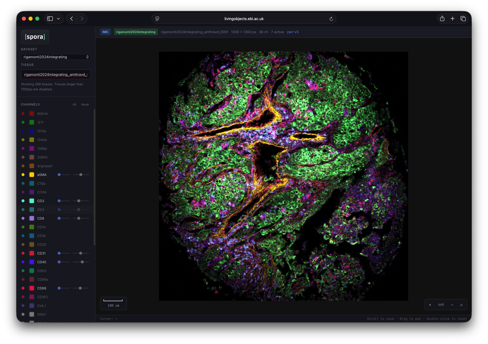
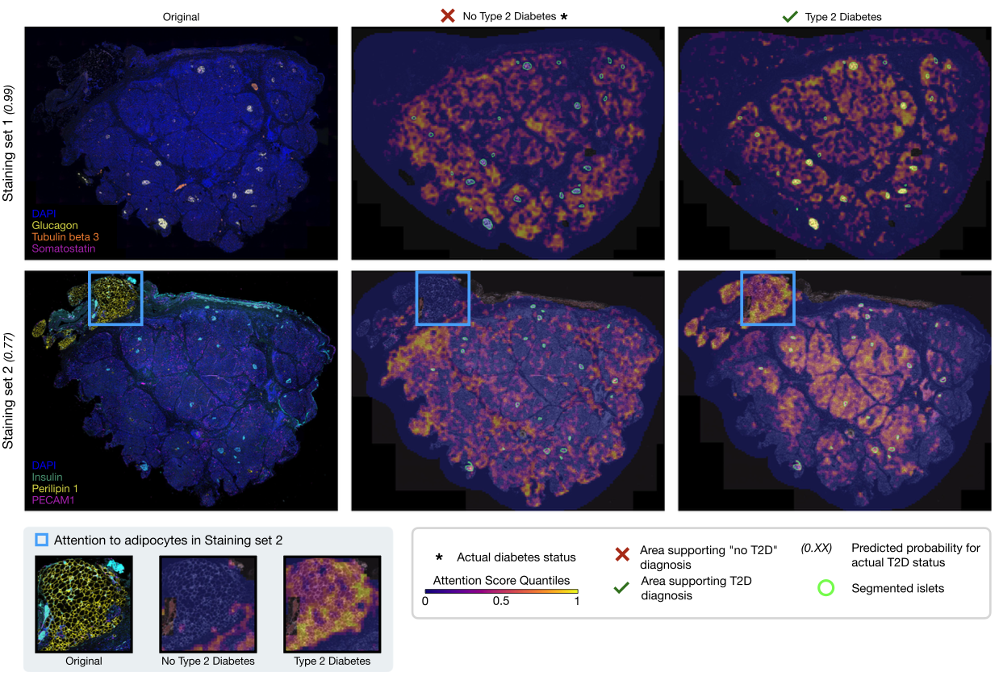
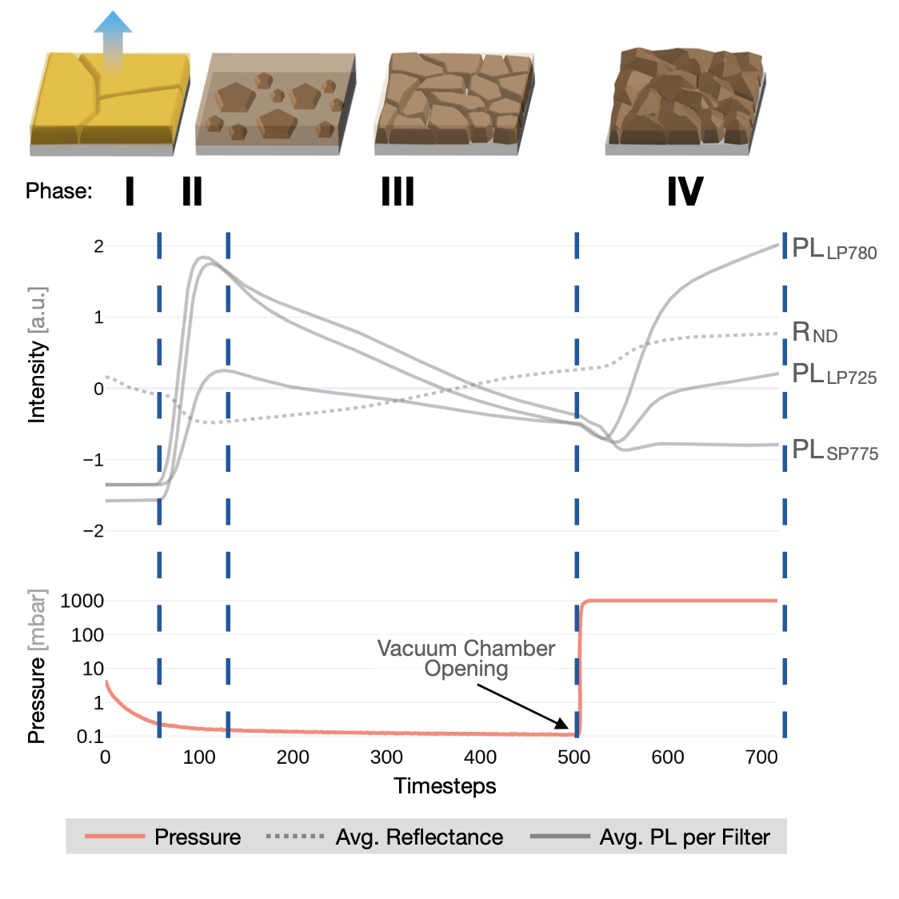

I am a PostDoc at EPFL and the University Hospital Zürich, working with Charlotte Bunne and Andreas Wicki.
My interdisciplinary research advances personalized medicine by developing AI for spatial omics technologies that tackle diagnostic, therapeutic, and discovery tasks.
Previously, I completed my Ph.D. in Computer Science at ETH Zürich and the German Cancer Research Center (DKFZ), supervised by Joachim Buhmann and Paul Jäger.
Selected Work
-

Neural Information Processing Systems (NeurIPS) 2026 · Access spora -

Nature Communications · Also presented at the NeurIPS 2024 IAI Workshop · Covered by GEN · Download the DIADEM Dataset -

Advanced Materials · Also presented at the NeurIPS 2023 XAI in Action Workshop (Top Paper Award) · Covered by The Independent
Education & Positions
-
PostDoc
-
Ph.D.
-
M.Sc.University of GenevaStatistics · Master Thesis & Research Intern at ETH Zürich
-
InternMicrosoft
-
B.Sc.University of MannheimEconomics